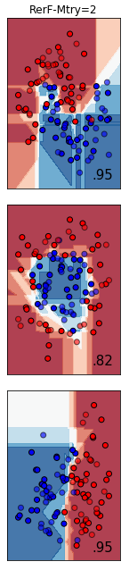
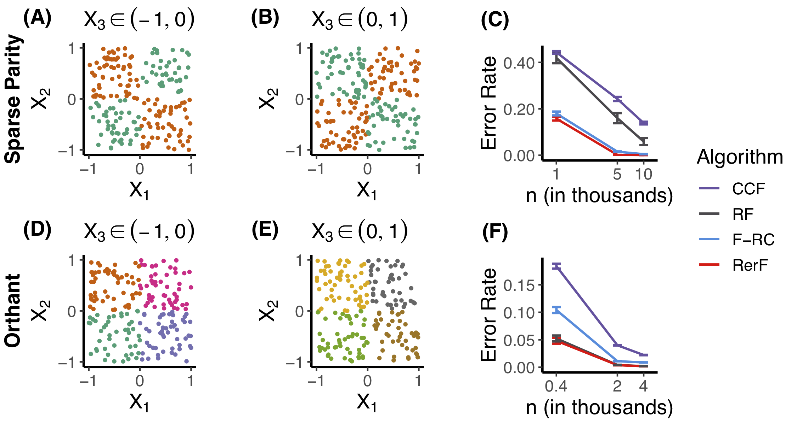
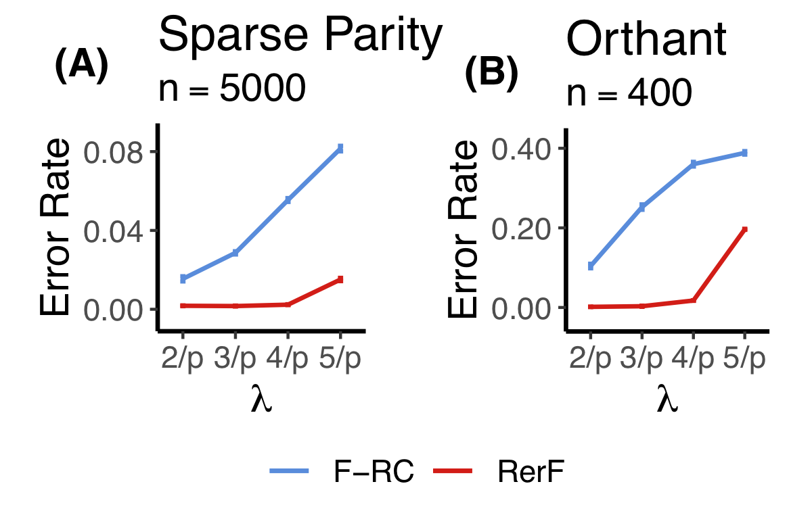
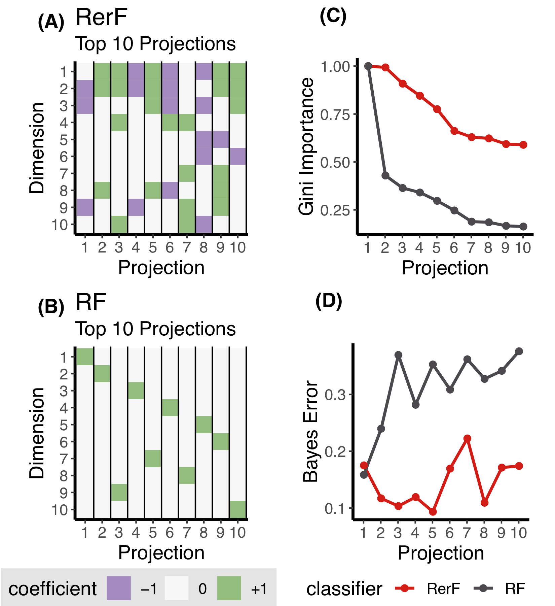
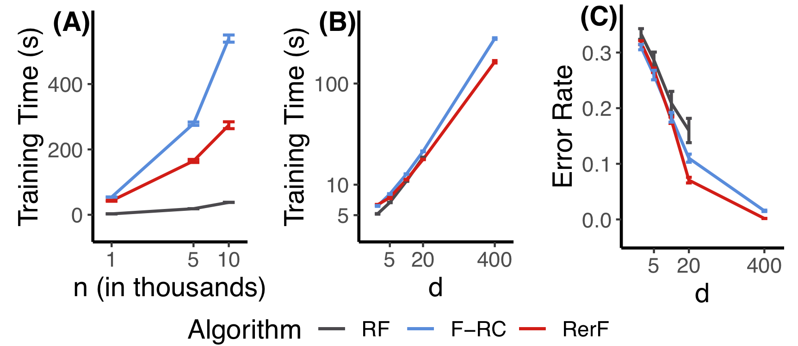
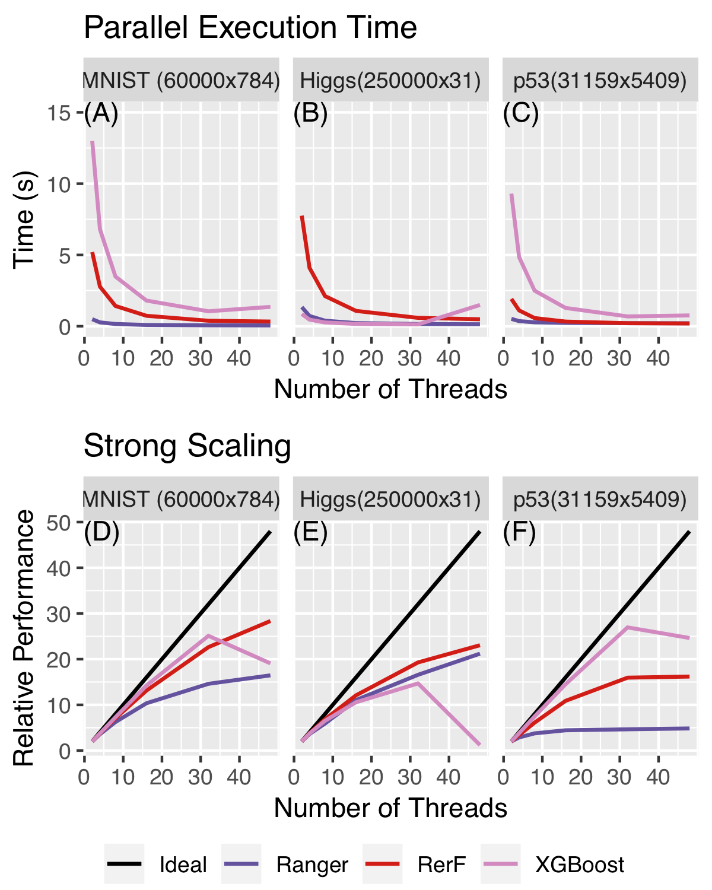
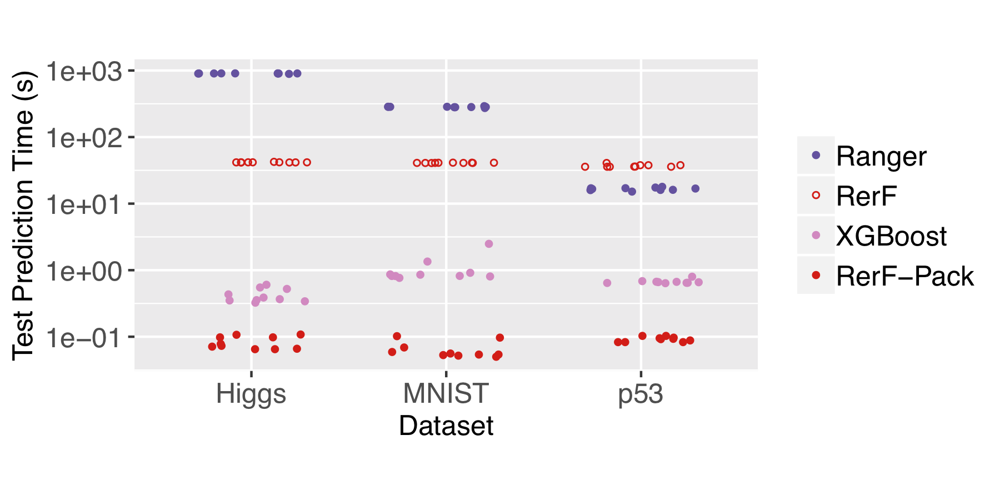
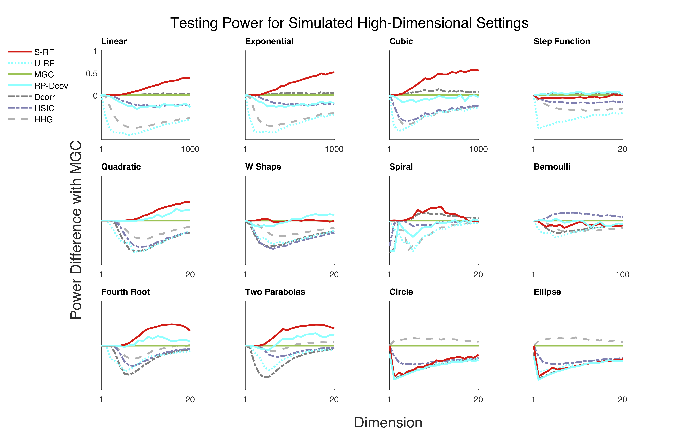

<!-- class: middle --> name:opening #### Randomer Forest Joshua T. Vogelstein | <https://neurodata.io/rerf> <img src="images/neurodata_purple.png" style="height:350px; float:right;"/> <br><br><br><br><br><br><br><br><br> <!-- <img src="images/funding/jhu_bme_blue.png" STYLE="HEIGHT:95px;"/> <img src="images/funding/KNDI.png" STYLE="HEIGHT:95px;"/> --> .footnote[[jovo@jhu.edu](mailto:jovo@jhu.edu) | <http://neurodata.io/talks/> | [@neuro_data](https://twitter.com/neuro_data)] <br> --- #### Motivation <br> -- - Discover predictable patterns in high-dimensional data - predict disease status vs wild-type - predict age - find "similar" individuals --- #### Formal Definition of Supervised Machine Learning <br><br> <!-- <img src="images/setup.png" alt="Drawing" style="width: 60%;"/> --> - Let $x_i \in \mathcal{X} \subseteq \mathbb{R}^p$ - Let $y_i \in \mathcal{Y} \subseteq \mathbb{R}^q$ - Given $\mathcal{D}_n = (x_i, y_i)$ pairs, for $i \in 1,\ldots, n$ - Assume each pair is sampled independently and identically from some joint distribution, $F_{XY}$ - Use the data $\mathcal{D}\_n$ to obtain an estimate of a function of $F\_{Y|X}$ --- ### Examples - Example 1 (classification): $y \in \{0,1\}$, we desire to estimate $E[Y|X]$ -- - Example 2 (regression): $y \in \mathbb{R}$, we desire to estimate $E[Y|X]$ -- - Example 3 (multivariate regression): $y \in \mathbb{R}^p$, we desire to estimate $E[Y|X]$ -- - Example 4 (canonical correlation analysis): we desire to find low-dimensional representations of $X$ and $Y$ that preserve certain properties -- - Example 5 (quantile regression): $y \in \mathbb{R}$, we desire to estimate $P[Y < y | X]$ -- - Example 6 (mutual information): we desire to estimate the amount of information $X$ and $Y$ have about one another, $MI(X,Y)= \sum_x P[x] \sum_y P[y|x] \log P[y|x]$ -- - Example 7 (independence testing): we wonder is $X$ independent of $Y$, $H\_0: F\_{XY} = F\_X F\_Y$, $H\_A: F\_{XY} \neq F\_X F\_Y$ -- .r[!!!!] --- class: top, left ## Outline <br> - intuition - simulations - real data - extensions - theory - discussion --- class: middle # .center[intuition] --- class: top, left #### Intuitive Desiderata of Supervised Learning Procedures <!-- <br> --> 1. Performant under *any* joint distribution - low- and high-dimensional - Euclidean and structured data (eg, sequences, images, networks, shapes) - linear and nonlinear relationships 6. Is interpretable 5. Is computational efficiency --- ### linear 2-way classification in 1 dimension <img src="images/1D-classifier.png" style="width: 50%;"/> - build a classifier on $\mathcal{D}_n$ - try all possible splits, compute the "score" for each - split on the best choice (highest score) - predict the class of a new $x$ - $g(x) = 1$ if $ x>$ threshold - $g(x) = 0$ if $x < $ threshold <br> -- - limitations? --- ### decision tree in 1 dimension <img src="images/1D-classifier.png" style="width: 50%;"/> - build a tree on $\mathcal{D}_n$ - try all possible splits, compute the "score" for each - split on the best choice (highest score) to create two daughter nodes - repeat on the daughter nodes - predict the class of a new $x$ - push down the tree - select the plurality class for the node $x$ lands in -- - limitations? --- ### random forest in 1 dimension <img src="images/1D-classifier.png" style="width: 50%;"/> - build a forest on $\mathcal{D}_n$ - subsample the data to select $m < n$ points - build a tree on each - predict the class of a new $x$ - push down each tree - select the plurality vote of the trees -- - limitations? --- ### random forest in 1D - what score function should i use? purity - how deep should each tree be? as deep as possible - how many trees? about 1000 seems fine - how does it scale? linearly in $n$, number of trees, dimension of data - any problems in 1D? not really --- ### linear 2-way classification in 2 dimension <img src="images/2D-classifier.png" style="width: 50%;"/> - build a classifier on $\mathcal{D}_n$ - try all possible .r[angles (?)], compute the "score" for each - split on the best choice (highest score) - predict the class of a new $x$ - $g(x) = 1$ if $ x>$ the line - $g(x) = 0$ if $x < $ the line <br> -- - limitations? --- ### decision tree in 2 dimension .pull-left30[ <img src="images/2D-decision-tree.png" style="height: 550px;"/> ] .pull-right70[ - build a tree on $\mathcal{D}_n$ - .r[for each dimension] try all possible splits, compute the "score" for each - split on the best choice (highest score) to create two daughter nodes - repeat on the daughter nodes - predict the class of a new $x$ - push down the tree - select the plurality class for the node $x$ lands in ] -- .pull-right70[ - limitations? ] --- ### random forest in 2 dimension .pull-left30[ <img src="images/2D-random-forest.png" style="height: 550px;"/> ] .pull-right70[ - build a forest on $\mathcal{D}_n$ - subsample the data to select $m < n$ points - build a tree on each - predict the class of a new $x$ - push down each tree - select the plurality vote of the trees ] -- .pull-right70[ - limitations? ] --- ### random forest in 2D - what score function should i use? purity - how deep should each tree be? as deep as possible - how many trees? about 1000 seems fine - how does it scale? linearly in $n$, number of trees, dimension of data - any problems in 1D? only considers .r[axis-aligned splits] --- <img src="images/RF-front-page.png" style="height: 250px;"/> <br> <img src="images/F-RC.png" style="width: 100%;"/> --- --- ### Forest-RC in 2 dimension .pull-left30[  ] .pull-right70[ - build a forest on $\mathcal{D}_n$ - subsample the data to select $m < n$ points - select $L$, number of linear combinations per split - build a .r[F-RC] tree on each - predict the class of a new $x$ - push down each tree - select the plurality vote of the trees - basic idea 1. rather than using "axis-aligned", use .r[oblique] splits 2. use .r[sparse] oblique splits ] -- .pull-right70[ - limitations? ] --- ### Random.r[er] Forest in 2 dimension .pull-left30[ ] .pull-right70[ - build a forest on $\mathcal{D}_n$ - subsample the data to select $m < n$ points - select $\lambda$, expected number of linear combinations per split - build a random.r[er] tree on each - predict the class of a new $x$ - push down each tree - select the plurality vote of the trees - basic idea 1. robust to parameter tuning 2. scalable open source implementation ] -- .pull-right70[ - limitations? ] --- class: top, left #### Intuitive Desiderata of Supervised Machine Learning <br> 1. Performant under *any* joint distribution - low- and high-dimensional - Euclidean and structured data (eg, sequences, images, networks, shapes) - linear and nonlinear relationships 6. Is interpretable 5. Is computational efficiency --- class: middle, center # .center[simulations] --- class: top, left ### 2 Different Functions  - *sparse parity* 3 signal dimensions, 17 noise dimensions - *orthant* 6 signal dimensions, no noise dimensions --- ### Robustness to Hyperparameter  --- ### Feature Importance  --- class: middle, center # .center[real data] --- ### Benchmark Suite - 100+ benchmark problems from previous literature - sample sizes range from 10's to 1000's - dimensions range from 10's to 1000's - previous result: RF better than all existing classifiers --- ### Empirical Performance (Numeric) <img src="images/rerf_error_histogram_benchmarks_numeric.png" style="width: 80%;"/> <img src="images/rerf_error_histogram_benchmarks_legend.png" style="width: 100%;"/> --- ### Empirical Performance (Mixed) <img src="images/rerf_error_histogram_benchmarks.png" style="width: 100%;"/> --- ### Summary so far - random forest was the best classifier - now, randomer forest is --- class: middle # .center[extensions] --- ## Random Projections - RF does feature selection - Feature selection is actually a sparse matrix multiplication - We can do other kinds of sparse matrix multiplies --- ### Classifying 2D Images via Structured RerF <img src="images/rerf_image_stripes.png" style="width: 70%;"/> --- ### Classifying on a Torus .pull-left[ <img src="images/rerf_circles.png" style="width: 100%;"/> ] .pull-right[ <img src="images/rerf_compare_algorithms_table5.png" style="width: 100%;"/>] --- ## Computational Considerations - Train time - Scalability - Test time --- ### Training Time  --- ### Scalability  --- ### Testing Time  --- ## Special Considerations - *Mixed data* some problems, "unbiased recursive partitioning" can mitigate them - *Missing data* in theory, no problem - *Outliers* in practice, no problem - *Regression* in certain implementations, no problem - *Very large sample size* in our implementation, no problem --- ### Universal Consistency <img src="images/rerf_error_rate_consistency.png" style="width: 100%;"/> --- ## Geodesic Learning - Assume data live near a low-dimensional manifold - But we observe data in high-dimensional space - Find the nearest neighbors (nn) on the manifold #### Metrics - *Geodesic Recall @ k* fraction of estimated k-nn that are k-nn on the manifold - Compute average GR@k over all points #### Algorithms - *Euclidean* (just compute Euclidean distances in observed dimensions) - *Isomap* - *UMAP* - *Random Forest* - *URerF* --- ### Simulated Datasets <img src="images/urerf_synthetic_datasets.png" style="width: 100%;"/> - Each has low-dimensional points - We add noise dimensions --- ### Simulated Results for Low Dimensions <img src="images/urerf_varying_dim_adele_with_euc.png" style="width: 100%;"/> --- ### Simulated Results for High Dimensions <img src="images/urerf_varying_dim_adele_10k_d_with_euc.png" style="width: 100%;"/> --- ### Real Data .pull-left[<img src="images/Fig15-new-right.png" style="width: 100%;"/>] .pull-right[<img src="images/urerf_dros_fig.png" style="width: 100%;"/>] --- ## Mutual Information - RF learns two things: - a partition of the data - a posterior in each partition - Can do them separately - Can correct for finite sample bias --- ### Estimating Posteriors/Quantiles <img src="images/cf_posterior_combined_and_var.png" style="width: 100%;"/> --- ### Estimating Mutual Information <img src="images/cf_mi_normalized_all.png" style="height: 550px;"/> --- ### Real Data Mutual Information .pull-left[<img src="images/Fig15-new-right.png" style="width: 100%;"/>] .pull-right[ - CF: 0.65 - KSG: 0.24 - Mixed KSG: 0.05] --- ### RerF Independence Testing - can use RF "kernel" in MGC - can directly estimate MI ---  --- class: middle, center # .center[theory] --- class: top, left ### Universal Consistency Lemma: RerF is universally consistent regression function -- ### Mutual Information Lemma: RerF with honest sampling is a consistent estimator of MI -- ### URerF is Robust to Noise Dimensions Lemma: E[urerf(geodesic)] = E[true geodesic] + constant --- ### Overall Summary - RerF empirically outperforms other classifiers on benchmarks - RerF scales better than other implementations - RerF provides feature importance - RerF can work on non-Euclidean data - RerF can estimate nearest (geodesic) neighbors - RerF can estimate mutual information - RerF can implement hypothesis testing --- ### References <br> - ROFLMAO [[1]](https://doi.org/10.1137/1.9781611974973.56) - RerF [[2]](http://arxiv.org/abs/1506.03410) - RF Packing [[3]](https://arxiv.org/abs/1806.07300) - RF Kernel [[4]](https://arxiv.org/abs/1812.00029) ### Forthcoming (drafts available upon request) - RF for MI [5] - URerF [6] --- ### Next Steps <br><br> - Get you going with it ([download here](https://neurodata.io/rerf)) - Apply it to your data --- --- ### Acknowledgements [jovo@jhu.edu](mailto:jovo@jhu.edu) | [neurodata.io](https://neurodata.io) | [@neuro_data](https://twitter.com/neuro_data) <div class="small-container"> <img src="faces/cep.png"/> <div class="centered">Carey Priebe</div> </div> <div class="small-container"> <img src="faces/randal.jpg"/> <div class="centered">Randal Burns</div> </div> <div class="small-container"> <img src="faces/mim.jpg"/> <div class="centered">Michael Miller</div> </div> <!-- <div class="small-container"> <img src="faces/dtward.jpg"/> <div class="centered">Daniel Tward</div> </div> --> <div class="small-container"> <img src="faces/ebridge.jpg"/> <div class="centered">Eric Bridgeford</div> </div> <!-- <div class="small-container"> <img src="faces/vikram.jpg"/> <div class="centered">Vikram Chandrashekhar</div> </div> --> <div class="small-container"> <img src="faces/drishti.jpg"/> <div class="centered">Drishti Mannan</div> </div> <div class="small-container"> <img src="faces/jesse.jpg"/> <div class="centered">Jesse Patsolic</div> </div> <div class="small-container"> <img src="faces/falk_ben.jpg"/> <div class="centered">Benjamin Falk</div> </div> <!-- <div class="small-container"> <img src="faces/kwame.jpg"/> <div class="centered">Kwame Kutten</div> </div> --> <!-- <div class="small-container"> <img src="faces/perlman.jpg"/> <div class="centered">Eric Perlman</div> </div> --> <div class="small-container"> <img src="faces/loftus.jpg"/> <div class="centered">Alex Loftus</div> </div> <div class="small-container"> <img src="faces/bcaffo.jpg"/> <div class="centered">Brian Caffo</div> </div> <div class="small-container"> <img src="faces/minh.jpg"/> <div class="centered">Minh Tang</div> </div> <div class="small-container"> <img src="faces/avanti.jpg"/> <div class="centered">Avanti Athreya</div> </div> <div class="small-container"> <img src="faces/vince.jpg"/> <div class="centered">Vince Lyzinski</div> </div> <div class="small-container"> <img src="faces/dpmcsuss.jpg"/> <div class="centered">Daniel Sussman</div> </div> <div class="small-container"> <img src="faces/youngser.jpg"/> <div class="centered">Youngser Park</div> </div> <div class="small-container"> <img src="faces/cshen.jpg"/> <div class="centered">Cencheng Shen</div> </div> <div class="small-container"> <img src="faces/shangsi.jpg"/> <div class="centered">Shangsi Wang</div> </div> <div class="small-container"> <img src="faces/tyler.jpg"/> <div class="centered">Tyler Tomita</div> </div> <div class="small-container"> <img src="faces/james.jpg"/> <div class="centered">James Brown</div> </div> <div class="small-container"> <img src="faces/disa.jpg"/> <div class="centered">Disa Mhembere</div> </div> <div class="small-container"> <img src="faces/pedigo.jpg"/> <div class="centered">Ben Pedigo</div> </div> <div class="small-container"> <img src="faces/jaewon.jpg"/> <div class="centered">Jaewon Chung</div> </div> <div class="small-container"> <img src="faces/gkiar.jpg"/> <div class="centered">Greg Kiar</div> </div> <div class="small-container"> <img src="faces/satish.jpg"/> <div class="centered">Satish</div> </div> <div class="small-container"> <img src="faces/jesus.jpg"/> <div class="centered">Jesus</div> </div> <div class="small-container"> <img src="faces/ronak.jpg"/> <div class="centered">Ronak</div> </div> <div class="small-container"> <img src="faces/bear.jpg"/> <div class="centered">bear</div> </div> <div class="small-container"> <img src="faces/brandon.jpg"/> <div class="centered">Brandon</div> </div> <div class="small-container"> <img src="faces/rguo.jpg"/> <div class="centered">Richard Guo</div> </div> <div class="small-container"> <img src="faces/jeremias.png"/> <div class="centered">Jeremias Sulam</div> </div> <span style="font-size:200%; color:red;">♥, 🦁, 👪, 🌎, 🌌</span> <img src="images/funding/nsf_fpo.png" STYLE="HEIGHT:95px;"/> <img src="images/funding/nih_fpo.png" STYLE="HEIGHT:95px;"/> <img src="images/funding/darpa_fpo.png" STYLE=" HEIGHT:95px;"/> <img src="images/funding/iarpa_fpo.jpg" STYLE="HEIGHT:95px;"/> <img src="images/funding/KAVLI.jpg" STYLE="HEIGHT:95px;"/> <img src="images/funding/schmidt.jpg" STYLE="HEIGHT:95px;"/> <br> --- <img src="images/lion_l2m.JPG" style="position:absolute; top:0px; left:0px; height:100%;"/>